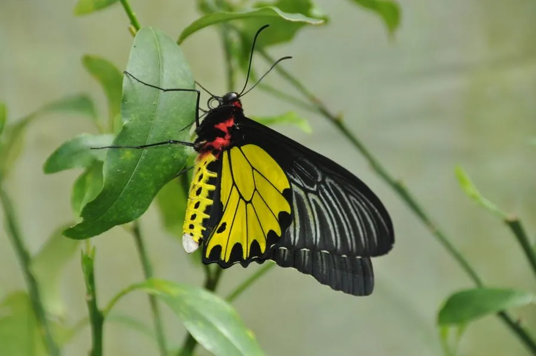

昆虫 · 动物界
金裳凤蝶 Troides aeacus

中国最大的蝴蝶之一，翅展可超过 15 cm，雄蝶后翅有耀眼的金黄色斑块，幼虫取食马兜铃，被列为国家二级保护动物。
- 分类
- 门节肢动物门纲昆虫纲目鳞翅目科凤蝶科属裳凤蝶属
- 栖息环境
- 热带和亚热带山地林缘、沟谷与马兜铃生长地
- 地理分布
- 中国南方、东南亚和南亚地区
- 保护级别
- 暂无评估；中国国家二级保护野生动物
物种志
金裳凤蝶是中国最大的蝴蝶之一，翅展可达 15–17 cm，雌蝶比雄蝶更大。雄蝶翅面黑色，后翅中央有耀眼的金黄色大斑；雌蝶翅面黑褐色，斑纹较浅，后翅外缘有黑色锯齿状纹，整体更显厚重。
它生活在热带和亚热带的山地林缘、沟谷和柑橘园附近，成虫飞行缓慢，喜欢访花吸蜜。雌蝶把卵产在马兜铃的叶片上，幼虫取食马兜铃，需要较长时间才能化蛹。金裳凤蝶分布于中国南方、东南亚和南亚，是中国国家二级保护野生动物，也被列入 CITES 附录，禁止非法贸易。由于栖息地破坏和标本贸易，野生种群受到威胁，需要加强保护。它的蛹为绿色，固定在马兜铃的枝条上。
形态与习性
- 食性幼虫取食马兜铃；成虫吸食花蜜
- 翅展可达 15–17 cm，是中国最大的蝴蝶之一
- 识别雄蝶后翅有金黄色大斑，雌蝶体型更大
- 保护国家二级保护野生动物，禁止非法贸易
- 分布中国南方、东南亚和南亚
趣味知识
- 金裳凤蝶是中国最大的蝴蝶之一，翅展能超过 15 厘米。
- 雄蝶后翅的金黄色斑块在阳光下像金属一样耀眼。
- 它被列入 CITES 附录，买卖标本属于违法行为。